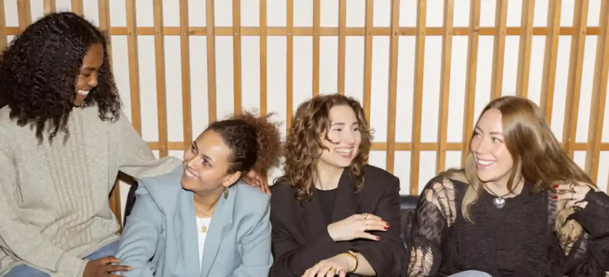
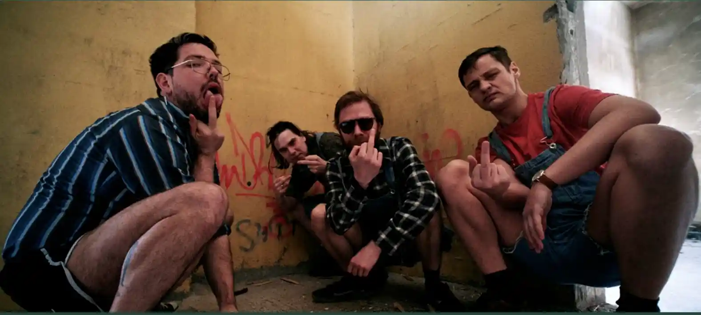

FEMY: En Uforglemmelig Aften på Radar
“At spille på Radar var en kæmpe milepæl for os i FEMY. Fra start følte vi os hjemme – både teamet og publikum gav os en oplevelse, hvor vi kunne være os selv og dele vores musik på den mest ægte måde. Radar er mere end en scene; det er en platform, der virkelig løfter upcoming artister.
Aftenen gav os ikke kun nye fans, men også selvtillid og en stærkere forbindelse til musikmiljøet i Aarhus. Radar gør en kæmpe forskel for byens kulturliv og giver ny musik en vigtig stemme. Vi er evigt taknemmelige og kan ikke vente med at komme tilbage! ❤️ Radar er et sted, der skaber musikalsk magi.”

Joe & The Shitboys: En Koncert vi Aldrig Glemmer!
“At spille på Radar var en gamechanger for os i Joe & The Shitboys. Det var ikke bare en koncert – det var en oplevelse, der forbandt os med både publikum og kulturen i Aarhus. Spillestedet tager musik seriøst og løfter upcoming bands som os med en scene, hvor lyd, rammer og stemning sidder lige i skabet.
Radar drives af passion og frivillighed, og det mærkes. Teamet gjorde alt for at skabe en legendarisk aften, og vi gik derfra med nye fans og en endnu større respekt for Aarhus’ kulturliv. Radar er stedet, hvor musik virkelig lever!”
